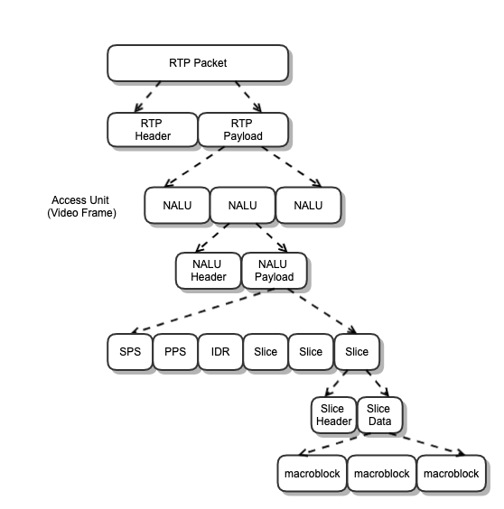
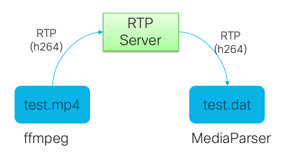

H.264 视频流的解析
Posted on Sun 12 December 2021 in Journal
| Abstract | H.264 视频流的解析 |
|---|---|
| Authors | Walter Fan |
| Status | WIP |
| Updated | 2021-12-10 |
视频流简介
视频就是一幅幅图片以每秒几十幅的速度播放，这些图片称帧(frame), 播放速度称为帧率(FPS - Frame Per Second)
准确地说，视频是由一系列图像组成的动作序列，并且该序列中的每个图像都将在要显示的动作序列的时间轴中接替前一个图像。 这些静止图像称为视频帧。每个视频帧之间的时间差越小，刷新率就越高，并且视频中的运动表现得越自然。
现代视频编码将这些帧分为三类

- I-frame 信息帧
信息帧用帧内压缩，用作关键帧
- P-frame
预测帧 Predictive Frame 用帧间压缩，反映之前的 I-frame 的变化
- B-frame
双向预测帧 Bidirectional Predictive Frames 使得总体压缩更高， 它参考了之前的 I-frame 和之后的 P-frame

术语
- I-Frame: Info frame 关键信息帧
- P-Frame: Predictive Frames 预测帧
- B-Frame: Bidirectional Predictive Frames 双向预测帧
- GOP: Group of Piciture 一组图片帧，通常是一个关键帧加上后续的预测帧
- IDR: Instant Decoder Refresh frames 立即解码刷新帧，不需要参考帧, 它通常是 GOP 中的第一帧
- GDR: Gradual Decoder Refresh frames 可分割更小的帧以更小的时间间隔发送
- LTRP: Long-Term Reference Picture frames 可供长期参考校正的帧
- SPS(Sequence Paramater Set) 序列参数集”。SPS中保存了一组编码视频序列(Coded Video Sequence)的全局参数。因此该类型保存的是和编码序列相关的参数
- PPS (Picture Paramater Set)图像参数集。该类型保存了整体图像相关的参数。
- SEI (Supplemental Enhancement Information) 补充增强信息，提供了向视频码流中加入额外信息的方法。
-
AU(Access Unit): 访问单元，它是一个或者多个NALU的集合，代表了一个完整的帧。一组 NAL 单元总是包含一个主要的编码图片。 除了主要编码图片之外，访问单元还可以包含一个或多个冗余编码图片， 或是不包含编码图片的切片或切片数据分区的其他NAL单元。 存取单元的解码总是产生解码图像。
-
coded video sequence: 编码的视频序列
访问单元序列，按解码顺序由瞬时解码刷新 (IDR) 访问单元和零个或多个非 IDR 访问单元组成，包括所有后续访问单元，直到但不包括任何后续 IDR 访问单元。
- IDR access unit:
主要编码图片为 IDR 图片的访问单元。
- IDR picture:
仅包含 I 或 SI 类型的slice 的编码图片，这会在解码过程中导致“重置”。 在对 IDR 图片进行解码之后，可以根据在 IDR 图片之前解码的任何图片，在没有帧间预测的情况下，对按照解码顺序的所有后续编码图片进行解码。
- primary coded picture:
解码过程使用的图片的编码表示，用于符合 H.264 的比特流。 主要编码图片包含图片的所有宏块。
- redundant coded picture:
图片或其中一部分的编码表示。 对符合 H.264 的比特流的解码过程不应使用冗余编码图片的内容。 冗余编码图片的内容可由解码过程用于包含错误或损失的比特流。
- VCL NAL unit:
用于指代编码切片（slice）和编码数据分区(data partition) 的 NAL 单元的统称。
- DON: Decoding Order Number 解码顺序号
H.264 视频流
基于以上的概念， H.264 将这些视频帧进行了分组，这些组称为 GOP(Group of Picture), 在这些组中的第一个视频帧通常都是 I-Frame

以一个视频通信的应用程序为例，视频编码程序会将采样的视频图片从 RGB 格式转为 YUV 格式，再将它们打包为 RTP packet ，如下图所示

让我们从外而内，看看视频 RTP 包的结构
RTP header - RTP 包头
0 1 2 3
0 1 2 3 4 5 6 7 8 9 0 1 2 3 4 5 6 7 8 9 0 1 2 3 4 5 6 7 8 9 0 1
+-+-+-+-+-+-+-+-+-+-+-+-+-+-+-+-+-+-+-+-+-+-+-+-+-+-+-+-+-+-+-+-+
|V=2|P|X| CC |M| PT | sequence number |
+-+-+-+-+-+-+-+-+-+-+-+-+-+-+-+-+-+-+-+-+-+-+-+-+-+-+-+-+-+-+-+-+
| timestamp |
+-+-+-+-+-+-+-+-+-+-+-+-+-+-+-+-+-+-+-+-+-+-+-+-+-+-+-+-+-+-+-+-+
| synchronization source (SSRC) identifier |
+=+=+=+=+=+=+=+=+=+=+=+=+=+=+=+=+=+=+=+=+=+=+=+=+=+=+=+=+=+=+=+=+
| contributing source (CSRC) identifiers |
| .... |
+-+-+-+-+-+-+-+-+-+-+-+-+-+-+-+-+-+-+-+-+-+-+-+-+-+-+-+-+-+-+-+-+
针对 H264视频帧，RTP 头中的某些字段有如下设置
- Marker bit (M): 1 bit
为 RTP 包中时间戳所指示的访问单元的最后一个数据包中设置 marker=1，这样可以用来进行有效的播放缓冲区处理。
在FU-A中的 marker 设定为只有最后一包才会设定 marker=1，其它则为 0
- Sequence number (SN): 16 bits
根据 RFC 3550 的定义来设置和使用，对于单NALU和非交错打包模式，序列号用于确定NALU的解码顺序。
- Timestamp: 32 bits
RTP 时间戳设置为视频内容的采样时间戳, 必须使用 90 kHz 时钟频率。
例如 H264的采样率为 90khz, 帧率 frame rate =15 那么每个包的时间戳 Timestamp 的步长约为 90000/15 = 6000
RTP payload - RTP 包内容
RTP 包的荷载中包含 H.264 中的视频流内容，也就是 NAL 网络抽象层

- NAL: Network Abstraction Layer 网络抽象层
- VCL: Video Coding Layer 视频编码层 VCL Layer 包含图片切片编码
NAL Unit
NAL Unit 是 header 和 playload 组成的
NAL Unit Header 就是一个字节，格式如下:
+---------------+
|0|1|2|3|4|5|6|7|
+-+-+-+-+-+-+-+-+
|F|NRI| Type |
+---------------+
1) forbidden zero bit
forbidden_zero_bit: 一个比特， H.264 规范将值 1 声明为语法违反规范。
2) NRI
NRI 两个比特，即 nal_ref_idc 称 NAL 参考索引
值 00 表示 NAL 单元的内容不用于重建用于图片间预测的参考图片，此类 NAL 单元可以丢弃，而不会危及参考图片的完整性。 大于 00 的值表示需要对 NAL 单元进行解码以保持参考图片的完整性。
例如：
- 00: the content of the NAL unit is not used to reconstruct reference pictures for inter picture prediction
- 11:
- nal_unit_type=7: SPS(Sequence Parameter Set)
- nal_unit_type=8: PPS(Picture Parameter Set)
- nal_unit_type=5: a coded slice belonging to an IDR picture
H.264 规定如下的 NAL unit type , 其 NRI 必须为 0
- 6 Additional information (SEI)
- 9 Access unit delimiter
- 10 End of sequence
- 11 End of stream
- 12 Filler data
Table 2. Example of NRI values for coded slices and coded slice
data partitions of primary coded reference pictures
NAL Unit Type Content of NAL Unit NRI (binary)
----------------------------------------------------------------
1 non-IDR coded slice 10
2 Coded slice data partition A 10
3 Coded slice data partition B 01
4 Coded slice data partition C 01
3) NAL Unit Type
NAL 类型以 5 个比特来表示
| NAL Type | Definition |
|---|---|
| 0 | Undefined |
| 1 | Slice layer without partitioning non IDR |
| 2 | Slice data partition A layer |
| 3 | Slice data partition B layer |
| 4 | Slice data partition C layer |
| 5 | Slice layer without partitioning IDR |
| 6 | Additional information (SEI) |
| 7 | Sequence parameter set |
| 8 | Picture parameter set |
| 9 | Access unit delimiter |
| 10 | End of sequence |
| 11 | End of stream |
| 12 | Filler data |
| 13..23 | Reserved |
| 24..31 | Undefined |
视频包的种类
为适合于通过 RTP 协议在网络上传输， H264 的视频包大体上分为三种：
-
Single NAL unit packet 单独包，一个包就是一个视频帧, NALU type : 1 \~ 23
-
Aggregation packet 聚合包，即一个包中含有多個H264帧
- NALU type 24: Single-Time Aggregation Packet type A (STAP-A) 单一时间聚合包 A
- NALU type 25: Single-Time Aggregation Packet type B (STAP-B) 单一时间聚合包 B
- NALU type 26: Multi-Time Aggregation Packet (MTAP) with 16-bit offset (MTAP16) 即 16 比特位移多时间聚合包
- NALU type 27: Multi-Time Aggregation Packet (MTAP) with 24-bit offset (MTAP24) 即 24 比特位移多时间聚合包
-
Fragmentation unit packet 分片包，用于将一帧数据被分为多个 RTP包, 常用于关键帧
- NALU type 28: FU-A
- NALU type 29: FU-B
在 RFC6184 中有如下规定
Table 1. Summary of NAL unit types and the corresponding packet
types
NAL Unit Packet Packet Type Name Section
Type Type
-------------------------------------------------------------
0 reserved -
1-23 NAL unit Single NAL unit packet 5.6
24 STAP-A Single-time aggregation packet 5.7.1
25 STAP-B Single-time aggregation packet 5.7.1
26 MTAP16 Multi-time aggregation packet 5.7.2
27 MTAP24 Multi-time aggregation packet 5.7.2
28 FU-A Fragmentation unit 5.8
29 FU-B Fragmentation unit 5.8
30-31 reserved -
在视频会议中，一般打包模式选择为非交错模式，会使用下面三种单元，不使用 STAP-B, FU-B 和 MTAP 单元
-
单一 NAL 单元 Single NALU：如果一个视频帧包含1个NALU，可以单独打包成一个 RTP 包，那么RTP时间戳就对应这个帧的采集时间
-
单一时间聚合 NAL 单元 STAP-A：如果某帧较大不能单独打包，但是该帧内部单独的 NALU 比较小，可以使用STAP-A方式合并多个NALU打包发送，但是这些NALU的时间戳必须一致，打包后的RTP时间戳也必须一致
-
FU-A：如果一个视频帧的 NALU 过大(超过 MTU)需要拆分成多个包，可以使用， FU-A 方式来拆分并打到不同的 RTP 包里，那么这几个包的 RTP 时间戳是一样的；
Signal NAL Unit packet 单一 NAL 单元包
- Single NALU：如果一个视频帧包含1个NALU，可以单独打包成一个RTP包，那么RTP时间戳就对应这个帧的采集时间；
0 1 2 3
0 1 2 3 4 5 6 7 8 9 0 1 2 3 4 5 6 7 8 9 0 1 2 3 4 5 6 7 8 9 0 1
+-+-+-+-+-+-+-+-+-+-+-+-+-+-+-+-+-+-+-+-+-+-+-+-+-+-+-+-+-+-+-+-+
|F|NRI| Type | |
+-+-+-+-+-+-+-+-+ |
| |
| Bytes 2..n of a single NAL unit |
| |
| +-+-+-+-+-+-+-+-+-+-+-+-+-+-+-+-+
| :...OPTIONAL RTP padding |
+-+-+-+-+-+-+-+-+-+-+-+-+-+-+-+-+-+-+-+-+-+-+-+-+-+-+-+-+-+-+-+-+
Figure 2. RTP payload format for single NAL unit packet
STAP 单一时间聚合包
如果某帧较大不能单独打包，但是该帧内部单独的 NALU 比较小，可以使用STAP 方式合并多个NALU打包发送，但是这些 NALU 的时间戳必须一致，打包后的 RTP 时间戳也必须一致，一个 STAP 单元包含多个子单元，每个子单元之前会有一个 NAL unit size 来指明这个子单元的长度， 这里只以 STAP-A 为例， STAP-B 也就是多了一个 DON(Decoding Order Number)
0 1 2 3
0 1 2 3 4 5 6 7 8 9 0 1 2 3 4 5 6 7 8 9 0 1 2 3 4 5 6 7 8 9 0 1
+-+-+-+-+-+-+-+-+-+-+-+-+-+-+-+-+-+-+-+-+-+-+-+-+-+-+-+-+-+-+-+-+
: NAL unit size | |
+-+-+-+-+-+-+-+-+-+-+-+-+-+-+-+-+-+-+-+-+-+-+-+-+ |
| |
| NAL unit |
| |
| +-+-+-+-+-+-+-+-+-+-+-+-+-+-+-+-+
| :
+-+-+-+-+-+-+-+-+-+-+-+-+-+-+-+-+
Figure 6. Structure for single-time aggregation unit
例如下面的例子
0 1 2 3
0 1 2 3 4 5 6 7 8 9 0 1 2 3 4 5 6 7 8 9 0 1 2 3 4 5 6 7 8 9 0 1
+-+-+-+-+-+-+-+-+-+-+-+-+-+-+-+-+-+-+-+-+-+-+-+-+-+-+-+-+-+-+-+-+
| RTP Header |
+-+-+-+-+-+-+-+-+-+-+-+-+-+-+-+-+-+-+-+-+-+-+-+-+-+-+-+-+-+-+-+-+
|STAP-A NAL HDR | NALU 1 Size | NALU 1 HDR |
+-+-+-+-+-+-+-+-+-+-+-+-+-+-+-+-+-+-+-+-+-+-+-+-+-+-+-+-+-+-+-+-+
| NALU 1 Data |
: :
+ +-+-+-+-+-+-+-+-+-+-+-+-+-+-+-+-+-+-+-+-+-+-+-+-+
| | NALU 2 Size | NALU 2 HDR |
+-+-+-+-+-+-+-+-+-+-+-+-+-+-+-+-+-+-+-+-+-+-+-+-+-+-+-+-+-+-+-+-+
| NALU 2 Data |
: :
| +-+-+-+-+-+-+-+-+-+-+-+-+-+-+-+-+
| :...OPTIONAL RTP padding |
+-+-+-+-+-+-+-+-+-+-+-+-+-+-+-+-+-+-+-+-+-+-+-+-+-+-+-+-+-+-+-+-+
Figure 7. An example of an RTP packet including an STAP-A
containing two single-time aggregation units
FU 分片单元包
如果一个视频帧的 NALU 过大(超过MTU)需要拆分成多个包，可以使用 FU 方式来拆分并打到不同的RTP包里，那么这几个包的RTP时间戳是一样的；
以 FU-A 为例 (FU-B 的区别就是多了一个 DON), 如图所示
0 1 2 3
0 1 2 3 4 5 6 7 8 9 0 1 2 3 4 5 6 7 8 9 0 1 2 3 4 5 6 7 8 9 0 1
+-+-+-+-+-+-+-+-+-+-+-+-+-+-+-+-+-+-+-+-+-+-+-+-+-+-+-+-+-+-+-+-+
| FU indicator | FU header | |
+-+-+-+-+-+-+-+-+-+-+-+-+-+-+-+-+ |
| |
| FU payload |
| |
| +-+-+-+-+-+-+-+-+-+-+-+-+-+-+-+-+
| :...OPTIONAL RTP padding |
+-+-+-+-+-+-+-+-+-+-+-+-+-+-+-+-+-+-+-+-+-+-+-+-+-+-+-+-+-+-+-+-+
Figure 14. RTP payload format for FU-A
其中 FU indicator 字节的格式如下
+---------------+
|0|1|2|3|4|5|6|7|
+-+-+-+-+-+-+-+-+
|F|NRI| Type |
+---------------+
它就是一个普通的 NAL header, 只是它的 type 等于 28（FU-A） 或 29 （FU-B）
其后的 FU header 字节的格式如下
+---------------+
|0|1|2|3|4|5|6|7|
+-+-+-+-+-+-+-+-+
|S|E|R| Type |
+---------------+
含义如下
- S: 1 bit 开始位
当设置为 1 时，Start 位指示分片 NAL 单元的开始。 当随后的 FU 有效载荷不是分片 NAL 单元有效载荷的开始时，起始位设置为零。
- E: 1 bit
当设置为 1 时，End 位表示分片 NAL 单元的结束，即有效载荷的最后一个字节也是分片 NAL 单元的最后一个字节。 当随后的 FU 有效载荷不是分片 NAL 单元的最后一个片段时，结束位设置为零。
-
R: 1 bit 保留位，始终为0
-
Type: 5 bits
实际被分片的 NAL 单元的类型，参见 RFC6184 的 Table 7-1
代码示例
在 https://github.com/cisco/openh264 中有相关结构和类型的详细定义, 至于聚合包和分片包，openh264 中本身并未定义
在 webrtc 的 video_coding 中有相关的定义
third_party/webrtc/modules/video_coding/codecs/h264/include/h264_globals.h
// The packetization types that we support: single, aggregated, and fragmented.
enum H264PacketizationTypes {
kH264SingleNalu, // This packet contains a single NAL unit.
kH264StapA, // This packet contains STAP-A (single time
// aggregation) packets. If this packet has an
// associated NAL unit type, it'll be for the
// first such aggregated packet.
kH264FuA, // This packet contains a FU-A (fragmentation
// unit) packet, meaning it is a part of a frame
// that was too large to fit into a single packet.
};
// Packetization modes are defined in RFC 6184 section 6
// Due to the structure containing this being initialized with zeroes
// in some places, and mode 1 being default, mode 1 needs to have the value
// zero. https://crbug.com/webrtc/6803
enum class H264PacketizationMode {
NonInterleaved = 0, // Mode 1 - STAP-A, FU-A is allowed
SingleNalUnit // Mode 0 - only single NALU allowed
};
我自己也写了一个小例子，演示如下

1) 先启动一个本地的服务器，我就写一个简单的 UDP server, 将从网络端口 8888 接收到的 RTP 包保存起来，代码很简单
#include <arpa/inet.h>
#include <netinet/in.h>
#include <stdio.h>
#include <sys/types.h>
#include <sys/socket.h>
#include <unistd.h>
#include <stdlib.h>
#include <string.h>
#include <iostream>
#include <string>
#include "rtputil.h"
#define BUFLEN 5120
#define PORT 8880
#define msg_trace(msg) std::cout<<__FILE__<<","<<__LINE__<<": " << msg <<std::endl
using namespace std;
void exitWithMsg(const char *str)
{
perror(str);
exit(1);
}
int main(int argc, char *argv[])
{
string rtpDumpFile = "rtp_dump.dat";
int nPort = PORT;
int nCount = 10000;
int nRet = 0;
if(argc > 2) {
nPort = atoi(argv[1]);
rtpDumpFile = argv[2];
if(argc > 3) nCount = atoi( argv[3]);
msg_trace("To dump rtp packets to " << rtpDumpFile << " for " << nCount << " packets" << " from udp port " << nPort);
} else {
cout << "usage: " << argv[0] << "<port> <dump_file> [<dump_rtp_count>]" << endl;
return -1;
}
msg_trace("--- udp server as rtp receiver ---");
struct sockaddr_in my_addr, cli_addr;
int sockfd;
socklen_t slen=sizeof(cli_addr);
uint8_t buf[BUFLEN];
if ((sockfd = socket(AF_INET, SOCK_DGRAM, IPPROTO_UDP))==-1)
exitWithMsg("socket error");
else
printf("Server : Socket() successful\n");
bzero(&my_addr, sizeof(my_addr));
my_addr.sin_family = AF_INET;
my_addr.sin_port = htons(nPort);
my_addr.sin_addr.s_addr = htonl(INADDR_ANY);
if (::bind(sockfd, (struct sockaddr* ) &my_addr, sizeof(my_addr))==-1)
exitWithMsg("bind error");
else
printf("Server : bind() successful\n");
ofstream ofs;
ofs.open (rtpDumpFile, std::ofstream::out | std::ofstream::app | std::ofstream::binary);
int pktCount = 0;
while(nCount > 0)
{
int pktSize = recvfrom(sockfd, buf, BUFLEN, 0, (struct sockaddr*)&cli_addr, &slen);
if(pktSize == -1) {
exitWithMsg("recvfrom()");
}
printf("The %d packet received %d from %s:%d ", ++pktCount, pktSize, inet_ntoa(cli_addr.sin_addr), ntohs(cli_addr.sin_port));
if(pktSize > 12) {
cout << dump_rtp_packet(buf, pktSize) <<endl;
dump_rtp_to_file(buf, pktSize, &ofs);
nCount --;
}
}
close(sockfd);
return 0;
}
其中用到的一个工具类 rtputil 源码就不贴了，参见
编译运行
git clone git@github.com:walterfan/webrtc_snippets.git
cd media
mkdir bld
cd bld
cmake ..
make
./udpserver 8888 dump.dat 1000
2) 将本地的一个 mp4 文件通过 ffmpeg 发送到这个服务器的 8888 端口上，命令如下
ffmpeg \
-re \
-i ../../obama_talk.mp4 \
-an \
-c:v copy \
-f rtp \
-sdp_file video.sdp \
"rtp://127.0.0.1:5004"
3) 将保存下来的 RTP 文件解析出来，分析其中保存的 H264 NAL 包
#include <stdio.h>
#include <stdint.h>
#include <iostream>
#include <stdio.h>
#include <string.h>
#include <time.h>
#include <sys/time.h>
#include <assert.h>
#include <unistd.h>
#include "MediaUtil.h"
using namespace std;
int main(int argc, char *argv[])
{
msg_trace("--- Walter test program ---");
int nRet = 0;
if(argc > 1) {
msg_trace("--- read media file ---");
string media_file = argv[1];
MediaFileParser* pParser = new MediaFileParser(media_file);
pParser->parse_stream();
delete pParser;
msg_trace("--- byebye ---");
} else {
msg_trace("Usage: " << argv[0] << " <media_file>");
}
return nRet;
}
其中用到的一个工具类 MediaUtil 源码就不贴了，参见 * MediaParser.h * MediaParser.cpp
编译运行
git clone git@github.com:walterfan/webrtc_snippets.git
cd video
mkdir bld
cd bld
cmake ..
make
./media_parser ../../media/bld/dump.dat |more
运行结果如下
# ,size, pt, ssrc, m, sn, ts, nalType, subNalType, start, end
1, 1472, 96, 1352798098, 0, 2156, 704725956, 28, 5, 1, 0,
2, 1472, 96, 1352798098, 0, 2157, 704725956, 28, 5, 0, 0,
3, 1472, 96, 1352798098, 0, 2158, 704725956, 28, 5, 0, 0,
4, 1472, 96, 1352798098, 0, 2159, 704725956, 28, 5, 0, 0,
5, 1472, 96, 1352798098, 0, 2160, 704725956, 28, 5, 0, 0,
6, 1472, 96, 1352798098, 0, 2161, 704725956, 28, 5, 0, 0,
7, 1472, 96, 1352798098, 0, 2162, 704725956, 28, 5, 0, 0,
8, 1472, 96, 1352798098, 0, 2163, 704725956, 28, 5, 0, 0,
9, 1472, 96, 1352798098, 0, 2164, 704725956, 28, 5, 0, 0,
10, 1472, 96, 1352798098, 0, 2165, 704725956, 28, 5, 0, 0,
11, 1472, 96, 1352798098, 0, 2166, 704725956, 28, 5, 0, 0,
12, 1472, 96, 1352798098, 0, 2167, 704725956, 28, 5, 0, 0,
13, 1472, 96, 1352798098, 0, 2168, 704725956, 28, 5, 0, 0,
14, 1472, 96, 1352798098, 0, 2169, 704725956, 28, 5, 0, 0,
15, 1260, 96, 1352798098, 1, 2170, 704725956, 28, 5, 0, 1,
16, 1472, 96, 1352798098, 0, 2171, 704729710, 28, 1, 1, 0,
17, 1472, 96, 1352798098, 0, 2172, 704729710, 28, 1, 0, 0,
参考资料
- RFC6184: RTP Payload Format for H.264 Video